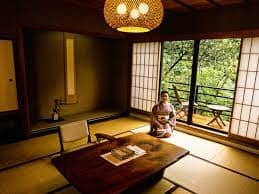
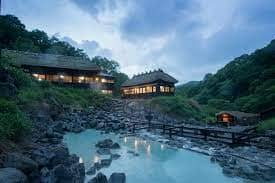
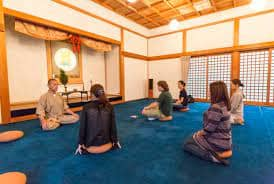
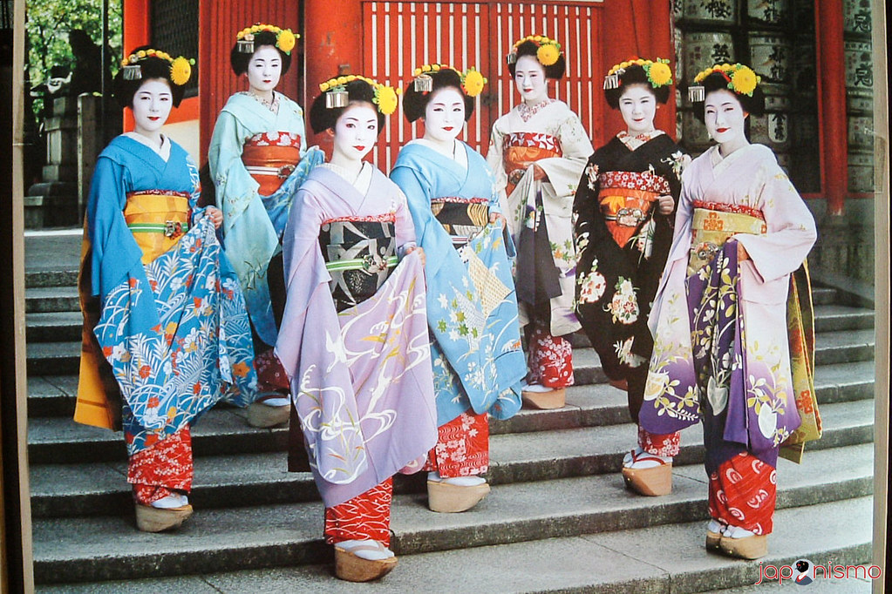

 Un "ryokan" es una posada tradicional japonesa que ofrece una experiencia única y distintiva para los viajeros. Su arquitectura sigue el estilo tradicional japonés con habitaciones de tatami y puertas corredizas de papel. Los huéspedes a menudo visten "yukata", un kimono ligero, durante su estancia. Algunos ryokanes tienen baños termales (onsen), ya sea de uso comunitario o privado. Las comidas son una parte integral de la experiencia, con cenas y desayunos "kaiseki" que presentan platos elaborados y artísticos. El servicio es personalizado, asegurando una estancia memorable y ofreciendo a los visitantes una inmersión auténtica en la cultura japonesa tradicional. Es una oportunidad para experimentar la hospitalidad japonesa y conocer de cerca las costumbres y tradiciones del país.
Un "onsen" es un término japonés que se refiere a un baño termal natural o a una instalación que ofrece este tipo de baño. Japón es un país con actividad geotérmica significativa, lo que ha dado lugar a numerosos manantiales de aguas termales. Estos baños termales son una parte importante de la cultura japonesa y son conocidos por sus propiedades relajantes y terapéuticas.

En un onsen, los visitantes se sumergen en aguas termales ricas en minerales, que se cree que tienen beneficios para la salud. Los onsens varían en tamaño y estilo, desde baños al aire libre con vistas panorámicas hasta instalaciones más modestas en hoteles y ryokanes. Es común que los baños estén separados por género, y los visitantes deben seguir un protocolo específico, como lavarse y enjuagarse completamente antes de entrar en el agua.
Disfrutar de un onsen es una experiencia relajante y culturalmente significativa en Japón.
 Un "shukubo" es un tipo de alojamiento tradicional en Japón que se encuentra en los terrenos de un templo budista. Estos lugares ofrecen a los visitantes la experiencia de hospedarse en un entorno tranquilo y espiritual, permitiéndoles sumergirse en la cultura y las prácticas religiosas del budismo. Características de un shukubo:
Alojarse en un shukubo brinda a los viajeros una experiencia única y enriquecedora que va más allá de la simple estancia en un alojamiento convencional.
Una geisha es una artista tradicional japonesa, altamente capacitada en diversas formas de entretenimiento, que puede incluir música, danza, juegos y conversación refinada. A menudo, las geishas son malentendidas como prostitutas, pero en realidad, su papel principal es proporcionar entretenimiento y compañía en eventos sociales. Aquí hay algunas características y hechos clave sobre las geishas:
Es importante comprender y apreciar la rica cultura y tradición que rodea a las geishas, reconociendo su papel como artistas y guardianas de la herencia cultural japonesa.
Para más información visite la siguiente página: Aquí